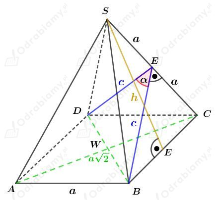
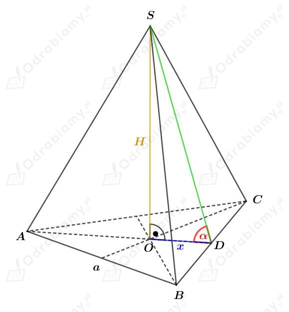
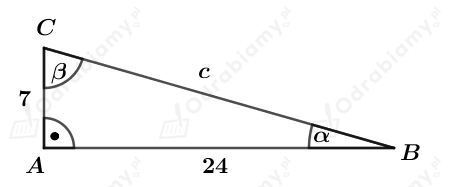
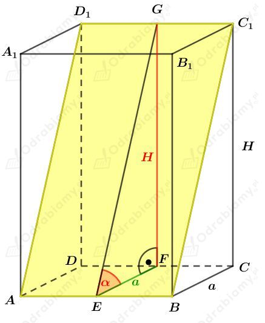
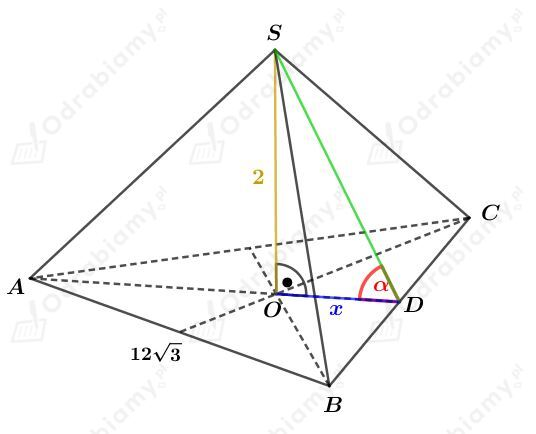
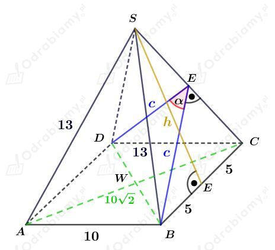

Rysunek:

Korzystając z twierdzenia Pitagorasa dla trójkąta ECS mamy:
Obliczmy pole powierzchni ściany bocznej tego ostrosłupa. Mamy:
Z drugiej strony, wiemy, że c to wysokość tego trójkąta opuszczona na bok o długości 2a. Korzystając z tych danych, wyznaczmy pole tego trójkąta.
Porównajmy otrzymane wielkości. Mamy:
Skorzystajmy z twierdzenia cosinusów dla trójkąta DBE. Mamy:
Podstawiając otrzymaną wcześniej wartość c mamy:
Rysunek:

Rozważmy trójkąt prostokątny ODS. Korzystając z funkcji tangens dla kąta 𝛼 mamy:
Odcinek x stanowi 1/3 długości wysokości h trójkąta równobocznego ABC. Zatem:
Korzystając ze wzoru na długość wysokości trójkąta równobocznego mamy:
Wyznaczmy pole powierzchni podstawy tego ostrosłupa. Korzystając ze wzoru na pole trójkąta równobocznego mamy:
Wyznaczmy objętość tego ostrosłupa. Mamy:
Dany jest graniastosłup prosty, którego podstawą jest trójkąt prostokątny o przyprostokątnych długości 7 cm i 24 cm.
Kąty między ścianami bocznymi mają taką samą miarę jak kąty w trójkącie prostokątnym będącym jego podstawą.
Naszkicujmy podstawę tego graniastosłupa:

Korzystając z funkcji tangens dla kąta 𝛼 otrzymujemy:
Z tabeli przybliżonych wartości funkcji trygonometrycznych mamy:
Zatem
Odp. Kąty zawarte między sąsiednimi ścianami bocznymi tego graniastosłupa mają miary 16o, 74o, 90o.
Rysunek:

Wiemy, że pole powierzchni bocznej wynosi Pb=480 cm2, a pole powierzchni całkowitej jest równe Pc=530 cm2.
Wyznaczmy pole powierzchni podstawy. Mamy:
Podstawą tego graniastosłupa jest kwadrat o polu równym 25 cm2, czyli bok kwadratu ma długość 5 cm.
I również
Korzystając z pola powierzchni bocznej mamy:
I stąd mamy również
Korzystając z twierdzenia Pitagorasa dla trójkąta EFG mamy:
Wyznaczmy sinus kąta 𝛼. Mamy:
a)
Dany jest ostrosłup prawidłowy trójkątny, którego wysokość ma długość 2 cm.
Objętość tego ostrosłupa wynosi 72√3 cm3, stąd otrzymujemy równanie:
Zauważmy, że podstawą tego ostrosłupa jest trójkąt równoboczny o boku długości a.
Korzystając ze wzoru na pole trójkąta równobocznego otrzymujemy:
Rysunek:

Odcinek x stanowi 1/3 długości wysokości trójkąta równobocznego ABC. Korzystając ze wzoru na wysokość trójkąta równobocznego mamy:
Rozważmy trójkąt ODS. Wyznaczmy tangens kąta 𝛼. Mamy:
Korzystając z tabeli przybliżonych wartości funkcji trygonometrycznych mamy:
b)
Rysunek:

Korzystając z twierdzenia Pitagorasa dla trójkąta ECS mamy:
Obliczmy pole powierzchni ściany bocznej tego ostrosłupa. Mamy:
Z drugiej strony, wiemy, że c to wysokość tego trójkąta opuszczona na bok CS o długości 13. Korzystając z tych danych, wyznaczmy pole tego trójkąta.
Porównajmy otrzymane wielkości. Mamy:
Skorzystajmy z twierdzenia cosinusów dla trójkąta DBE. Mamy: